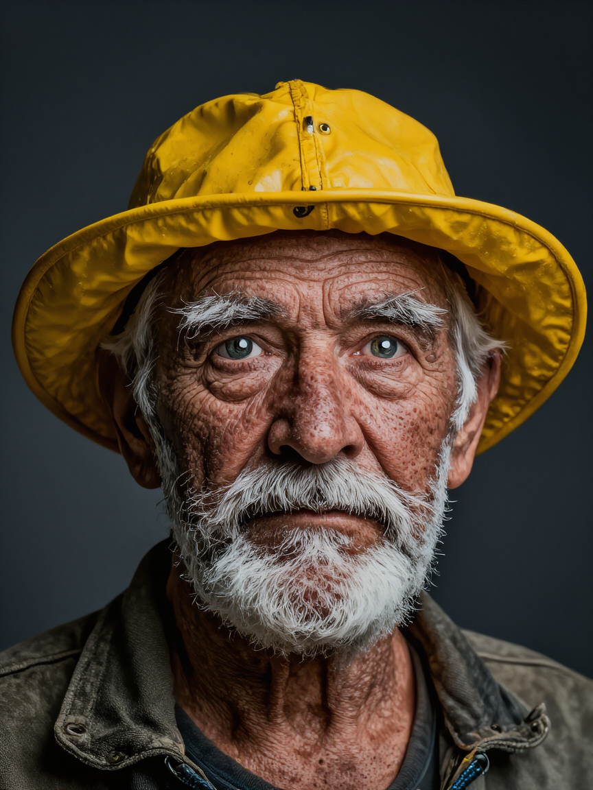
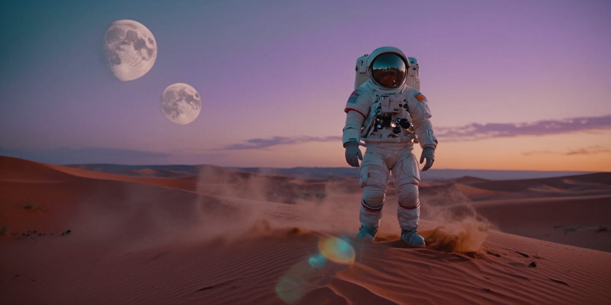
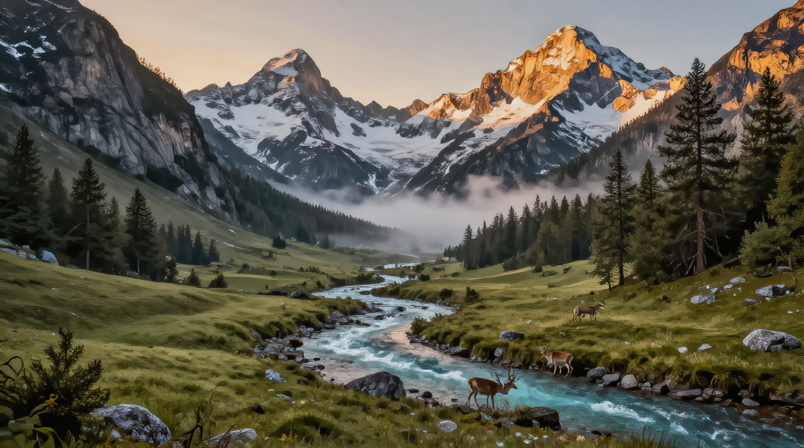
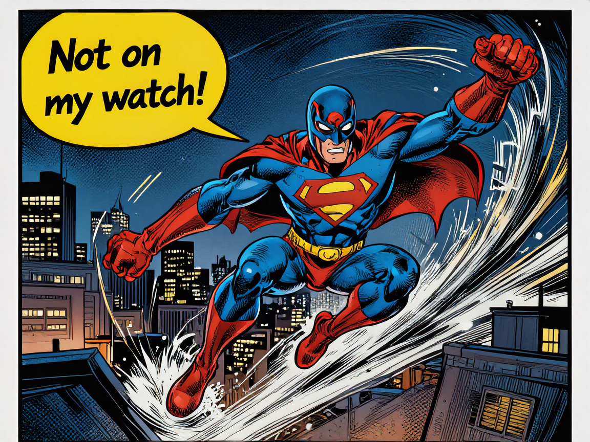
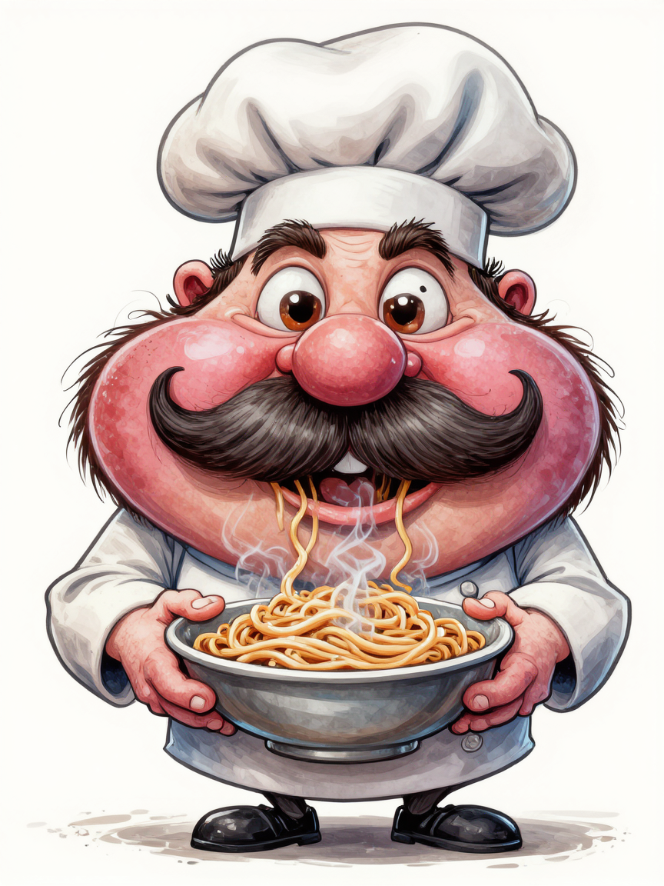
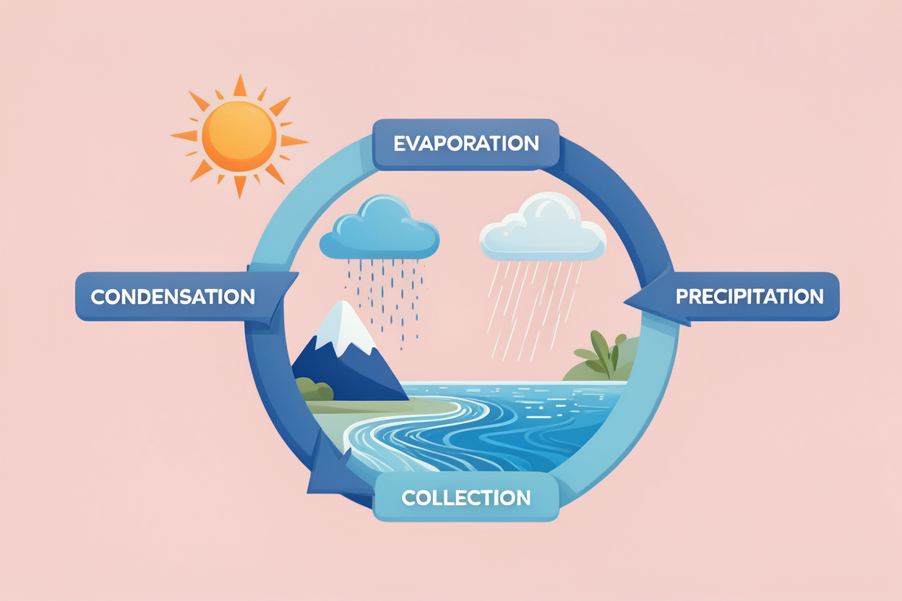
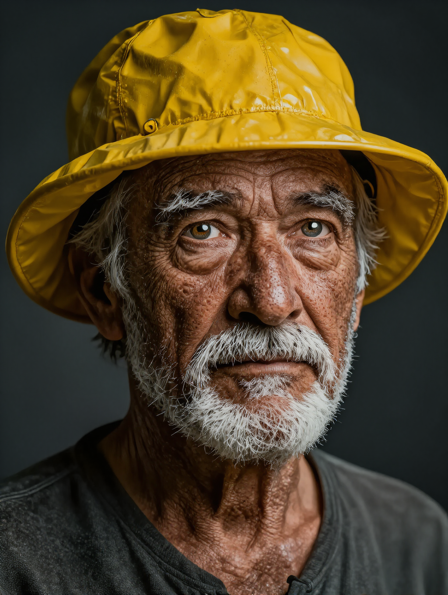
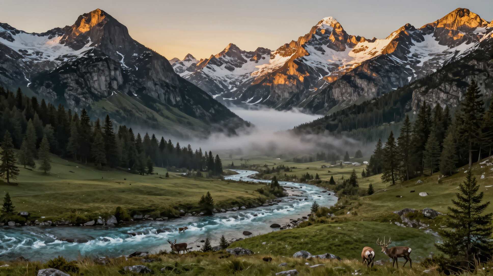
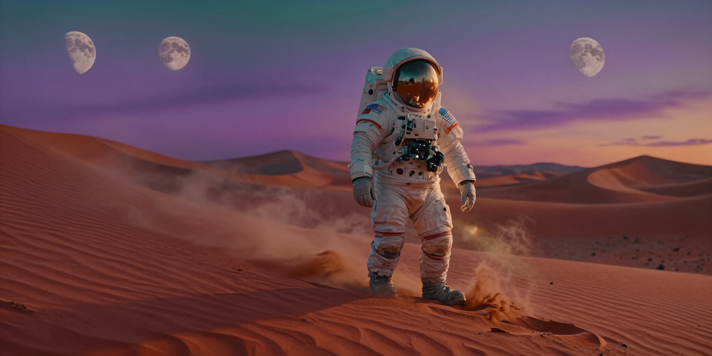

TL;DR
Lens (Microsoft) is a 3.8B-parameter text-to-image DiT that conditions on multi-layer features from a GPT-OSS-20B encoder and decodes through the FLUX.2 VAE. The encoder ships in MXFP4 (4-bit), which is the whole reason a 20B model fits at all (~11 GB).
On a 24 GB RTX 4090 it runs out of the box with CPU offload at any resolution. Running it without offload works up to 1024 — but only barely, peaking at ~24 GB. Every 1440 image OOMs in bf16, because the 4-bit encoder stays resident and the bf16 DiT eats the rest.
The fix is to quantize the one component that is still full precision: the DiT. A
weight-only FP8 pass (torchao) halves it from ~7.6 GB to ~3.8 GB, dropping the 1440
peak from ~27 GB (OOM) to ~23 GB (fits) — with no visible quality loss. After that,
Lens does 1440 fully on the GPU, no offload.
What Lens is, in one paragraph
Lens is a 3.8B-parameter foundational text-to-image model from Microsoft, built
for training efficiency and high-resolution generation. Architecturally it is unusual: instead of a CLIP/T5 text
encoder, it conditions a 48-block double-stream MMDiT on multi-layer hidden states
pulled from a GPT-OSS-20B language model (layers 5/11/17/23, concatenated), and it decodes latents
through the FLUX.2 VAE. Three checkpoints ship: the RL-tuned microsoft/Lens (20 steps,
cfg 5.0), a distilled 4-step Lens-Turbo, and the supervised Lens-Base.
The interesting consequence for a local run is the memory shape. That GPT-OSS-20B encoder is enormous for a text encoder — but it is shipped in MXFP4 (4-bit), so it lands at roughly 11 GB instead of ~40 GB. The denoiser and VAE are comparatively small. So the question on a 24 GB card is never "does it load" — it is "how much room is left for the diffusion activations once that 4-bit encoder is sitting on the GPU."
uv venv on
Python 3.12 with torch 2.11+cu126, diffusers 0.38, transformers 5.8. All weights
cached on a data disk (/d/hugging_face_cache) — the full microsoft/Lens repo is ~29 GB.
Running it on a 4090 — the easy part
The reference path just works. Load the MXFP4 encoder, assemble the pipeline, move it to CUDA, and generate. On a 4090 a 1024² image at 20 steps takes ~9 s once the model is warm. There are two non-obvious setup details worth flagging up front, because both cost time before the first image appears:
- A pre-release dependency.
diffusers 0.38pins a pre-releasesafetensors(0.8.0rc), so the install needsuv pip install --prerelease=allow— a plain install fails to resolve. - MXFP4 on Ada. MXFP4 matmul kernels officially target Hopper (sm_90); the 4090 is Ada (sm_89).
In practice the
transformers+kernelspath still runs the 4-bit encoder fine here (you get a harmlesskernelsdeprecation warning). The naive "dequantize to bf16" escape hatch is a trap — a dequantized 20B encoder is ~40 GB and will not fit in 24 GB at all.
# install (note the pre-release flag)
uv pip install torch==2.11.0+cu126 torchvision==0.26.0+cu126 \
--index-url https://download.pytorch.org/whl/cu126
uv pip install --prerelease=allow -r requirements.txt
# generate (with CPU offload — the out-of-the-box path, any resolution)
python inference.py --prompt "a cinematic mountain lake at sunrise" \
--base_resolution 1440 --aspect_ratio 16:9 --steps 20 --cfg 5.0 --offloadThe challenge: 1440 without offload OOMs
CPU offload works, but it is not free — it shuttles whole modules between CPU and GPU, and I wanted the encoder and
denoiser to simply stay resident. Dropping --offload and calling pipe.to("cuda") exposes
the real budget. The 4-bit encoder (~11 GB) plus the bf16 DiT (~7.6 GB) is ~19 GB before any image, leaving
~5 GB for activations. That is enough for 1024 (it peaks right at the 24 GB ceiling) but not for
1440: every 1440 image hit a hard CUDA out of memory, the bf16 path needing ~27 GB.
Before the fix that worked, two reasonable-sounding ideas failed, and they are worth recording because both look correct on paper:
pipe.text_encoder.to("cpu") to free ~11 GB before denoising. It frees almost
nothing: MXFP4 quantized weights don't release on .to("cpu"), and moving the module
flips pipe._execution_device to CPU (latents then try to allocate on CPU → a generator/device mismatch).
try/except
OutOfMemoryError and retrying at 1024 still OOMs on the retry. The caught exception's traceback keeps
the failed forward's tensors alive, so empty_cache() frees nothing. The retry only works if you
leave the except block first, then gc.collect() + empty_cache() before trying
again.
Both dead-ends point at the same conclusion: you cannot claw the 11 GB encoder back at runtime. If 1440 is going to fit, the savings have to come from the only component still at full precision — the DiT.
The fix: weight-only FP8 on the DiT
The text encoder is already 4-bit; there is nothing left to take there. The DiT, however, was running in
bf16 (~7.6 GB). Quantizing it weight-only to FP8 via torchao
(diffusers exposes this through TorchAoConfig) roughly halves it to ~3.8 GB.
The 4090 has FP8 tensor cores, and weight-only FP8 uses native PyTorch ops — so it runs even though two of torchao's
Hopper-only prebuilt kernels fail to load (they aren't needed here).
That ~3.8 GB saving is far more than the ~1–2 GB by which 1440 was overshooting. The 1440 peak drops from ~27 GB
(OOM) to ~23 GB, and Lens generates 1440 fully on the GPU, no offload. I wired it
into a --quant_transformer flag; the model's own attention already uses memory-efficient SDPA, so the
only change needed was the weight precision.
uv pip install torchao
# 1440, no offload, on a 24 GB 4090 — FP8-quantized DiT + MXFP4 encoder
python inference.py --prompt "..." \
--base_resolution 1440 --aspect_ratio 16:9 --steps 30 --cfg 4.5 \
--quant_transformer float8_weight_only # NOTE: no --offloadThe config matrix I settled on
| Resolution / goal | Recommended config (RTX 4090, 24 GB) | Peak VRAM |
|---|---|---|
| ≤ 1024, fastest | no offload, bf16 DiT | ~23.7–24.0 GB |
| 1440, no offload | --quant_transformer float8_weight_only | ~22.9–23.4 GB |
| 1440, bf16 fidelity | bf16 DiT + --offload | fits (slower) |
| 1440, bf16, no offload | not possible | ~27 GB → OOM |
int8_weight_only saves about the
same with similar quality, and int4_weight_only saves more but starts to cost output quality.
What it actually produces — eight categories
Every image below was generated no offload at 1024 (the peak-VRAM edge case), one per category, to see where Lens is strong and where it isn't. Each caption is the exact configuration — base resolution, aspect ratio, steps, cfg and seed — followed by the prompt. Same prompt + seed + config is reproducible.
Photorealistic — portrait
Strong"Photorealistic studio portrait of an elderly fisherman with a deeply weathered face, white stubble, bright yellow rain hat, dramatic Rembrandt lighting, 85mm f/1.4, hyper-detailed skin pores, sharp catchlights"

Cinematic — sci-fi still
Good, minor prompt drift"Cinematic film still, wide anamorphic shot of a lone astronaut on a windswept red desert dune at dusk, two distant moons, teal-and-orange color grade, volumetric dust, lens flare, shot on ARRI Alexa"

Honest take
The mood, grade and lens flare are spot-on and genuinely cinematic. One honest miss: the prompt said two moons and the model rendered three. Exact counts are not Lens's strong suit — a known failure mode of most T2I models.
Landscape / nature
Looks painterly"A sweeping landscape photograph of an alpine valley at golden hour, turquoise river, snow-capped peaks, pine forest, grazing deer, soft mist, ultra-wide vista, National Geographic style"

Honest take
Beautiful, but it reads as a digital painting, not a photo — soft, slightly illustrative lighting. The phrase "National Geographic style" nudged it toward render territory. This one bugged me enough that I reshot it properly later in the article (see the prompt lesson).
Text / typography
Strong'A vintage hand-lettered coffee-shop chalkboard reading "THE DAILY GRIND" in ornate white serif, with "Fresh Roast - Open 7am" beneath, coffee-bean illustrations, realistic slate texture'
Honest take
Text rendering is a real strength here — both lines are spelled correctly and the styling matches the brief. This is where the GPT-OSS text encoder seems to earn its keep; many T2I models would garble at least one word.
Comics
Strong'A vibrant comic-book panel, masked superhero in a blue-and-red suit leaping between rooftops at night, bold black outlines, halftone shading, a yellow speech bubble saying "Not on my watch!"'

Honest take
Convincing comic styling — inks, halftones, dynamic pose — and the speech bubble text is correct. Short in-image text plus a defined art style is clearly in Lens's comfort zone.
Caricature
On-style"A humorous exaggerated caricature of a cheerful Italian chef, enormous bushy mustache, huge round cheeks, tiny body, oversized chef hat, holding steaming spaghetti, bold linework with watercolor shading"

Honest take
The exaggeration reads correctly as caricature rather than cartoon — proportions pushed, features inflated, line and watercolor handling on point. A solid result with no special prompting tricks.
Diagram / infographic
Surprisingly strong'A clean educational infographic of the water cycle, labelled "EVAPORATION", "CONDENSATION", "PRECIPITATION", "COLLECTION" with arrows in a circular flow, flat vector style, pastel palette'

Honest take
All four labels are spelled correctly and placed on a coherent circular flow — unusual for a general T2I model, which usually turns diagram labels into gibberish. Not a substitute for a design tool, but genuinely useful for rough explainer visuals.
Illustration
Strong"A whimsical children's-book watercolor of a small red fox reading a book under a glowing paper lantern in an autumn forest, soft brush strokes, warm orange-and-teal palette, fireflies, cozy storybook mood"
Honest take
Exactly the requested storybook watercolor — soft edges, warm palette, cohesive mood. Illustrative styles come out reliably and need the fewest steps (22 was plenty).
1440 — fully on the GPU, no offload
With the FP8 DiT, the three categories that benefit most from resolution run at 1440 with the encoder and denoiser both resident. Captions show the measured peak VRAM — all comfortably under the 24 GB ceiling that bf16 blew past. The extra resolution shows: the portrait in particular gains real micro-detail in the skin and beard versus its 1024 version above.



Quantization quality check
Side by side with the bf16 1024 versions, I could not pick out an "FP8 look" — no banding, no color shift, no loss of fine texture. For weight-only FP8 on a diffusion transformer that matches expectations: the activations stay bf16, only the stored weights are 8-bit. The win is pure headroom, paid for with essentially no visible quality.
A prompt lesson: "photo" vs "painting"
The alpine landscape in the gallery came out painterly, and the culprit was the prompt. "National Geographic style" reads to the model as an aesthetic, not a camera. Swapping the art language for concrete photographic cues — a body, a lens, an aperture, "RAW photo", "high dynamic range", "no haze", "extreme detail" — and nudging cfg down to 4.5 pushes Lens firmly into photoreal territory.
"A photorealistic landscape photograph of a rugged mountain range at sunrise, sharp granite peaks dusted with fresh snow, a still glacial lake mirroring the peaks, pine forest along the shore, crisp clear air with no haze, soft warm side light, extreme detail, high dynamic range, RAW photo shot on a Nikon D850 with a 24-70mm lens at f/11, professional nature photography"
The rule of thumb
For photorealism with Lens: name a camera + lens + aperture, say "RAW photo / photograph", add "high dynamic range / extreme detail / no haze", and avoid the words "style", "art" and "painting". A slightly lower cfg (~4.0–4.5) tends to look more natural for photos than the default 5.0+.
Honest verdict
Lens is a genuinely strong text-to-image model that punches above its 3.8B size, and the GPT-OSS encoder clearly pays off where it matters most: text rendering, labelled diagrams, and prompt following are all better than I expected from a model this size. Portraits, illustration and comic styling are reliably good. Where it stumbles is the usual T2I weak spot — exact object counts ("two moons" became three) — and, like any model, it does what the prompt literally says, so vague aesthetic words can quietly steer you away from photorealism.
On hardware, the headline is the memory story. The 4-bit encoder is a clever way to ship a 20B conditioner, but it also fixes ~11 GB of your budget in place. On a 24 GB 4090 that makes 1024 the comfortable no-offload ceiling out of the box — and a one-line FP8 quantization of the DiT is what turns "1440 needs offload" into "1440 runs fully on the GPU," with no quality I could see. That is the most reusable takeaway here: when the encoder is already quantized, quantize the denoiser.
--quant_transformer float8_weight_only (no offload). Want bf16 fidelity at 1440 → use --offload
instead. For photos, prompt a camera and lens, not a "style".
References
- Hugging Face —
microsoft/Lens— the RL-tuned weights (plusLens-TurboandLens-Base). - GitHub —
microsoft/Lens— the minimal inference code (inference.py, thelenspackage). - torchao — the weight-only FP8/int8 quantization used on the DiT, exposed via
diffusers'TorchAoConfig. - Building blocks: the GPT-OSS text encoder (MXFP4) and the FLUX.2 VAE for latent decoding.
Honest take
This is Lens at its best. Skin texture, the catchlights, the wet sheen on the hat — it reads as a real photograph, with no tell-tale "AI plastic" skin. Portraits and faces are clearly a strength.